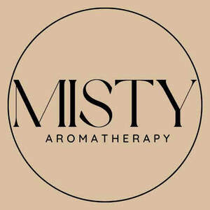

Trade Mark Journal No.2025/026 27 June 2025
UK00004217518 11 June 2025 (3)

- Class 3
- Aromatherapy lotions; Aromatherapy creams; Aromatherapy preparations; Potpourri sachets for incorporating in aromatherapy pillows; Massage oils; Massage oils and lotions; Scented oils; Ethereal oils for fragrancing; Facial massage oils; Aromatic oils for the bath; Essences for fragrancing; Perfume oils; Body massage oils; Massage candles for cosmetic purposes; Oils for perfumes and scents; Peppermint oil [perfumery]; Aromatherapy pillows comprising potpourri in fabric containers; Massage oil; Bath oils; Non-medicated bath oils; Bath oils (Non-medicated -); Scented water for fragrancing; Massage oils, not medicated; After-sun oils [cosmetics]; Essential oils as perfume for laundry purposes; Natural oils for perfumes; Cedarwood perfumery; Lavender oil for cosmetic use; Bath and shower oils [non-medicated]; Non-medicated shower oils; Bath herbs; Shower oils; Bath oils for cosmetic purposes; Ethereal essences and oils; Non-medicated oils; Geraniol for fragrancing; Tanning oils [cosmetics]; Potpourris [fragrances]; Scented body lotions; Cosmetic massage creams; Non-medicated massage preparations; Rosemary oil for cosmetic use; Eucalyptus oil for cosmetic use; Perfumed oils for skin care; Distilled oils for beauty care; Scented soaps; Facial oils; Mineral oils [cosmetic]; Suntan oils [cosmetics]; Scented bathing salts; Scented sachets; Fragrance sachets; Aromatic potpourris; Scented oils used to produce aromas when heated; Scented body lotions and creams; Essential oils; Perfume oils for the manufacture of cosmetic preparations; Room fragrancing products; Perfumery and fragrances; Citronella oil for cosmetic use; Bath lotions (Non-medicated -); Cosmetic sun oils; Sun-tanning oils; Incense sachets; Cleansing lotions; Massage waxes; Fragrance sachets for eye pillows; Oils for the skin; Cosmetics in the form of oils; Perfuming sachets; Skin care oils [non-medicated].
Megan Young
Hayley Honeywood